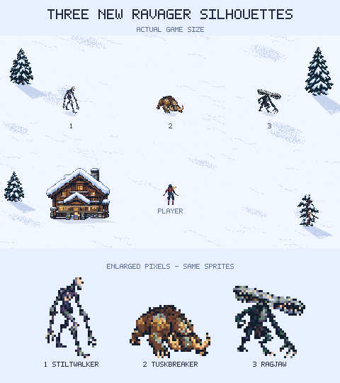

Three different predators
New shapes for the fast, distracted Yeti.

1 · Stiltwalker
Spindly limbs, a blank pale face and a long, crooked stride.
2 · Tuskbreaker
A low charging brute with huge tusks and crushing forelimbs.
3 · Ragjaw
A wide, sideways-opening jaw above a lean, ragged body.